99%
Plasma
நட்சத்திரங்களின் உள்ளே பொருள் மிக அதிக வெப்பத்தில் ionized state-ல் இருக்கும்.
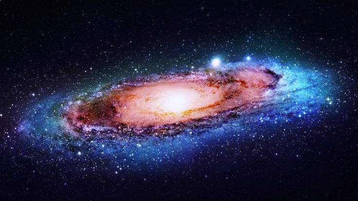
இருண்ட விண்வெளியில் ஒளிரும் ஒவ்வொரு நட்சத்திரமும் ஒரு பிரம்மாண்டமான cosmic engine. அவை ஒளியையும், வெப்பத்தையும் மட்டுமல்ல — பிரபஞ்சத்தின் வரலாற்றையும் தங்களுக்குள் சுமந்து செல்கின்றன.
நட்சத்திரங்கள் வெறும் வானத்தில் தெரியும் ஒளிப்புள்ளிகள் அல்ல. அவை மிகப்பெரிய plasma கோளங்கள்.
நட்சத்திரங்களின் உள்ளே பொருள் மிக அதிக வெப்பத்தில் ionized state-ல் இருக்கும்.
நமது சூரியனின் visible surface சுமார் 5,500°C அளவுக்கு வெப்பமாக உள்ளது.
Milky Way போன்ற ஒரு galaxy-யிலேயே நூற்றுக்கணக்கான பில்லியன் நட்சத்திரங்கள் இருக்கலாம்.
Main-sequence stars-ல் nuclear fusion மூலம் மிகப்பெரிய ஆற்றல் உருவாகிறது.
ஒரு நட்சத்திரம் என்பது அதன் சொந்த ஈர்ப்புவிசையால் ஒன்றாக கட்டுப்படுத்தப்பட்டுள்ள மிகப்பெரிய மற்றும் மிகவும் சூடான plasma கோள்.
அதன் மையப்பகுதியில் ஏற்படும் nuclear fusion காரணமாக மிகப்பெரிய அளவில் ஆற்றல் உருவாகிறது. அந்த ஆற்றல் ஒளி மற்றும் பிற electromagnetic radiation வடிவங்களில் விண்வெளியில் பயணிக்கிறது.
பிறப்பிலிருந்து இறுதி நிலை வரை — ஒவ்வொரு நட்சத்திரத்திற்கும் தனித்துவமான cosmic story உள்ளது.
அடுத்த பகுதிகளில், இந்த cosmic journey-யின் ஒவ்வொரு கட்டத்தையும் ஆழமாகப் பார்க்கப் போகிறோம்.
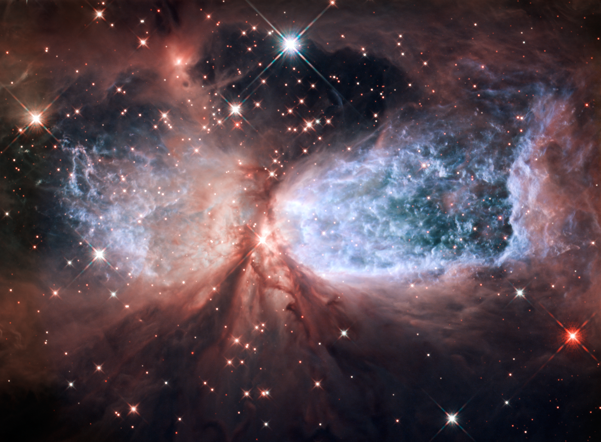
பிரபஞ்சத்தில் நட்சத்திரங்கள் தனியாக உருவாகுவதில்லை. அவற்றின் பிறப்பிடம் — மிகப்பெரிய, குளிர்ந்த gas மற்றும் dust clouds.
இத்தகைய பகுதிகள் stellar nurseries என்று அழைக்கப்படுகின்றன. இங்கு gravity மெதுவாக பொருளை ஒன்றாகச் சேர்த்து, எதிர்கால நட்சத்திரங்களுக்கான dense cores-ஐ உருவாக்குகிறது.
ஒரு nebula-வில் ஒரே நேரத்தில் பல புதிய நட்சத்திரங்கள் உருவாகலாம்.
Gas மற்றும் dust-ஐ ஒன்றாக இழுத்து dense regions உருவாக்குகிறது.
பெரும்பாலான நட்சத்திரங்களின் ஆரம்ப மூலப்பொருளாக hydrogen முக்கிய பங்கு வகிக்கிறது.
Cloud-ன் ஒரு பகுதி அதிக அடர்த்தியடைந்தால் protostar உருவாகும் பாதை தொடங்குகிறது.
Gravity காரணமாக cloud சுருங்கும்போது அதன் மையத்தில் வெப்பம் அதிகரிக்கிறது.
Gas மற்றும் dust நிறைந்த மிகப்பெரிய molecular cloud.
Gravity காரணமாக cloud-ன் ஒரு பகுதி சுருங்கத் தொடங்குகிறது.
பொருள் மையத்தில் அதிகமாகக் குவிந்து, density அதிகரிக்கிறது.
சூடாகிக் கொண்டிருக்கும் இளம் stellar object உருவாகிறது.
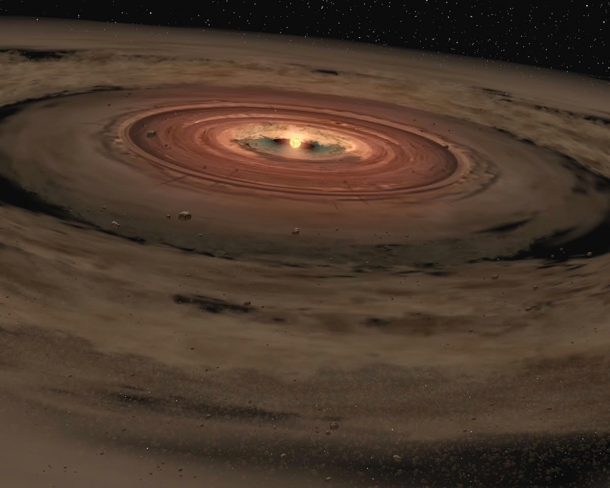
ஒரு பெரிய வாயு மற்றும் தூசி மேகம் ஈர்ப்பு விசையால் சுருங்கத் தொடங்கும்போது, அதன் மையத்தில் உருவாகும் இளம் விண்மீன் பொருளே Protostar.
இது இன்னும் முழுமையான நட்சத்திரம் அல்ல. பொருள் தொடர்ந்து மையத்தை நோக்கி விழும்போது, அதன் ஈர்ப்பு ஆற்றல் வெப்பமாக மாறுகிறது. காலப்போக்கில் மையம் மேலும் சூடாகி, ஒரு உண்மையான நட்சத்திரமாக மாறும் பாதையை அது தொடங்குகிறது.
Protostar நிலையில் மையத்தில் நிலையான Hydrogen fusion இன்னும் தொடங்கியிருக்காது.
ஒரு குளிர்ந்த molecular cloud-இல் தொடங்கும் gravitational collapse, மெதுவாக ஒரு புதிய நட்சத்திரத்தின் விதையை உருவாக்குகிறது.
மிகப்பெரிய வாயு மற்றும் தூசி மேகத்தின் ஒரு பகுதி ஈர்ப்பு விசையால் நிலையற்றதாகிறது.
மேகத்தின் பகுதி தன்னுடைய ஈர்ப்பு விசையால் உள்ளே சுருங்கத் தொடங்குகிறது.
பொருள் மையத்தை நோக்கி சேரும்போது protostar சூடாகி, அதைச் சுற்றி accretion disk உருவாகலாம்.
மையம் போதுமான வெப்பநிலை மற்றும் அழுத்தத்தை அடைந்தபின் sustained hydrogen fusion தொடங்கும்.
Protostar தொடர்ந்து சுருங்கி, மைய வெப்பநிலை மற்றும் அழுத்தம் அதிகரிக்கும்போது அதன் அடுத்த பெரிய கட்டம் தொடங்குகிறது — Hydrogen fusion.
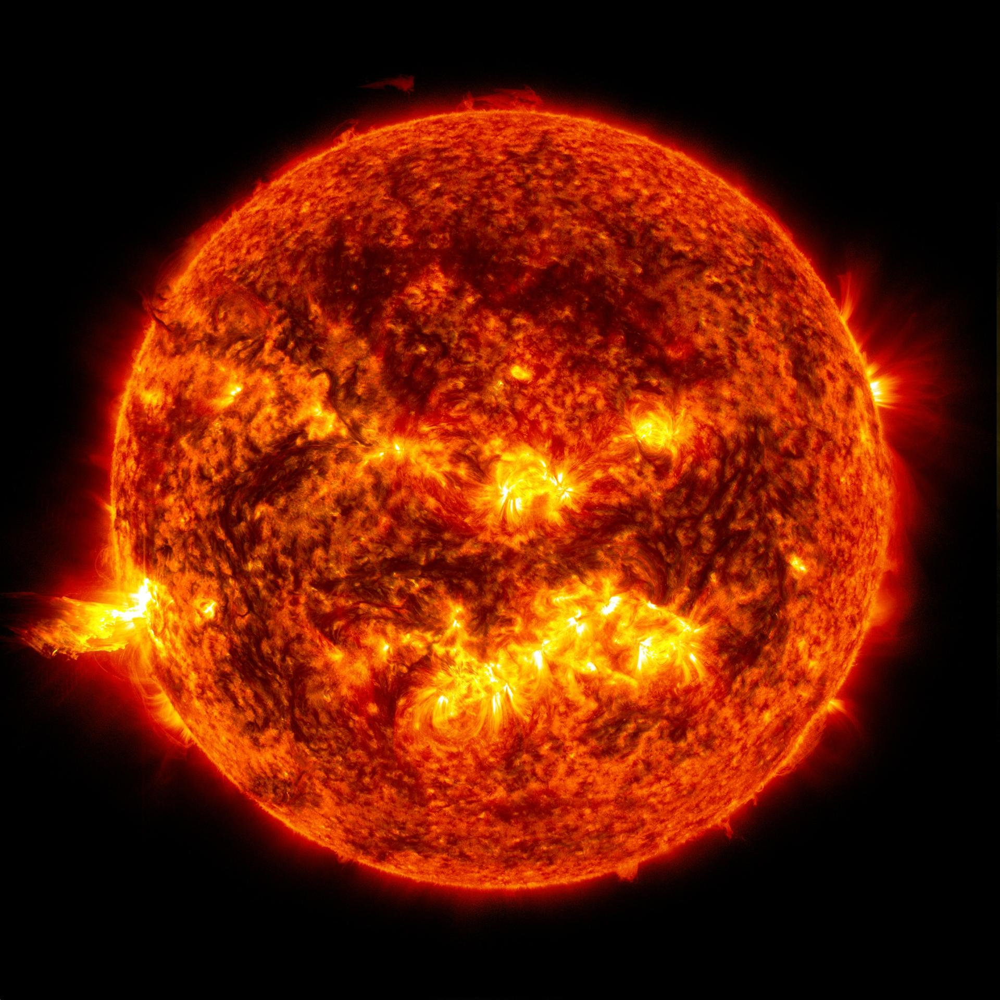
பூமிக்கு மிக அருகில் இருக்கும் நட்சத்திரம் சூரியன். அது பிரபஞ்சத்தில் தனித்துவமானது அல்ல — Hydrogen fusion மூலம் ஒளியும் வெப்பமும் உருவாக்கும் ஒரு சாதாரண main-sequence star.
சூரியனைப் போன்ற நட்சத்திரங்கள் தங்கள் மையத்தில் Hydrogen-ஐ Helium-ஆக மாற்றி ஆற்றலை வெளியிடுகின்றன. அவற்றின் வாழ்க்கையின் நீண்ட பகுதி இந்த stable fusion நிலையில் நடைபெறுகிறது.
சூரியனின் ஆற்றல்தான் பூமியில் உயிர்களின் பெரும்பாலான ஆற்றல் சங்கிலிகளுக்கான அடிப்படை.
Gravity நட்சத்திரத்தை உள்ளே இழுக்கிறது; core-இல் நடைபெறும் fusion உருவாக்கும் ஆற்றல் வெளிப்புறமாக அழுத்தத்தை வழங்குகிறது. இந்த சமநிலை நட்சத்திரத்தை நிலையாக வைத்திருக்கிறது.
நட்சத்திரத்தின் மிகப்பெரிய mass அதன் பொருளை மையத்தை நோக்கி இழுக்கிறது.
மையத்தில் மிக உயர்ந்த வெப்பநிலை மற்றும் அழுத்தம் உருவாகிறது.
Hydrogen nuclei இணைந்து Helium உருவாக்கும்போது ஆற்றல் வெளியிடப்படுகிறது.
Fusion மூலம் உருவாகும் pressure, gravity-க்கு எதிராக செயல்பட்டு stellar balance-ஐ உருவாக்குகிறது.
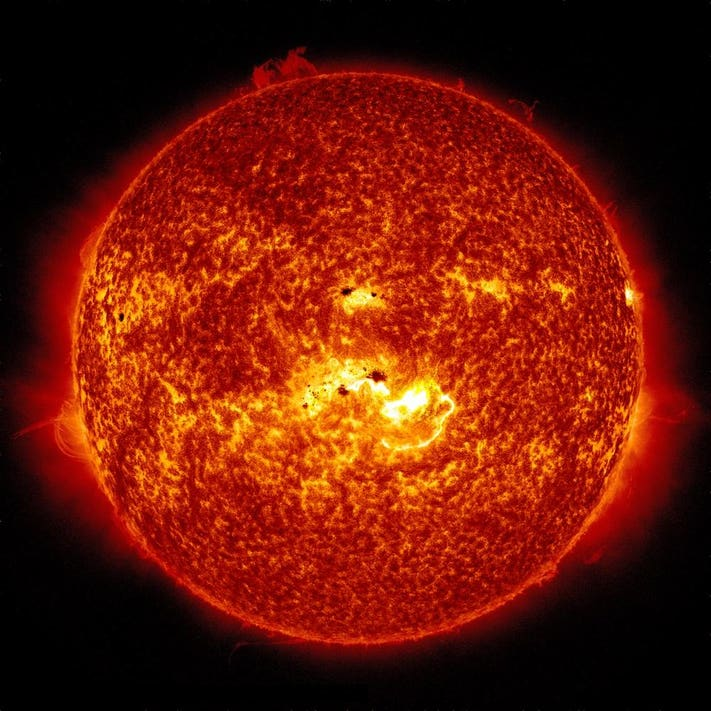
வானில் சிவப்பு அல்லது ஆரஞ்சு நிறத்தில் தோன்றும் நட்சத்திரங்கள் பொதுவாக நீல நிற நட்சத்திரங்களை விட குறைந்த surface temperature-ஐ கொண்டிருக்கும்.
ஆனால் “red star” என்பது ஒரே ஒரு stellar வகையை மட்டும் குறிக்காது. சிறிய, குளிர்ச்சியான red dwarfs முதல் மிகப்பெரிய red giants வரை பல வகையான நட்சத்திரங்கள் சிவப்பாகத் தோன்றலாம்.
ஒரு நட்சத்திரத்தின் நிறம் அதன் surface temperature பற்றிய முக்கியமான தகவலை வழங்குகிறது.
“Red” என்பது நிறத்தைப் பற்றிய ஒரு observation. அதன் பின்னால் இருக்கும் physical properties மற்றும் stellar evolution வெவ்வேறாக இருக்கலாம்.
குறைந்த mass கொண்ட red dwarfs மெதுவாக Hydrogen fusion செய்து, மிக நீண்ட stellar lifetimes கொண்டிருக்கலாம்.
ஒரு Sun-like star தனது core Hydrogen-ஐ பெரும்பாலும் பயன்படுத்திய பின் விரிவடைந்து red giant கட்டத்தை அடையலாம்.
நட்சத்திரத்தின் emitted light-இன் spectrum அதன் surface temperature-ஐ அறிய astronomers-க்கு உதவுகிறது.
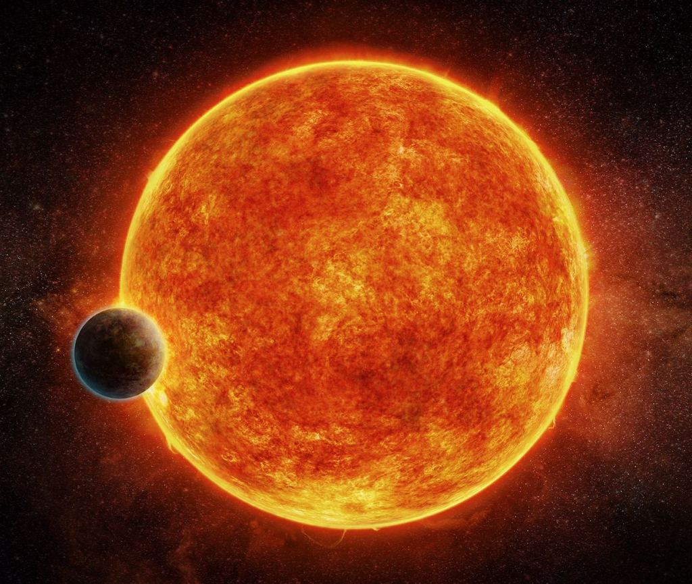
ஒரு நட்சத்திரத்தின் நிறம் அதன் மேற்பரப்பு வெப்பநிலையைப் பற்றிய முக்கியமான தகவலை நமக்குக் கொடுக்கிறது.
ஆரஞ்சு நிற நட்சத்திரங்கள் பொதுவாக நீல அல்லது வெள்ளை நட்சத்திரங்களை விட குளிர்ச்சியான மேற்பரப்பைக் கொண்டிருக்கும். ஆனால் அவை இன்னும் மிகப்பெரிய அளவில் வெப்பத்தையும் ஒளியையும் வெளியிடும் மிகவும் சக்திவாய்ந்த நட்சத்திரங்களாகும்.
குறிப்பாக K-type நட்சத்திரங்கள் ஆரஞ்சு நிறத்துடன் காணப்படலாம். இவை நட்சத்திரங்களின் வெப்பநிலை, நிறம் மற்றும் ஆயுட்காலம் ஆகியவற்றைப் புரிந்துகொள்ள உதவும் சிறந்த உதாரணங்கள்.
நிறம் மட்டும் ஒரு நட்சத்திரத்தின் முழு தன்மையையும் தீர்மானிக்காது. ஆனால் அது அதன் வெப்பநிலையை மதிப்பிடுவதற்கான முக்கிய clue ஆகும்.
ஆரஞ்சு நிற நட்சத்திரங்களை புரிந்துகொள்ள வேண்டிய முக்கிய அம்சங்கள்.
நீல மற்றும் வெள்ளை நட்சத்திரங்களுடன் ஒப்பிடும்போது குறைந்த மேற்பரப்பு வெப்பநிலை கொண்டிருக்கலாம்.
அதன் ஒளியின் spectral distribution காரணமாக நமது கண்களுக்கு ஆரஞ்சு அல்லது warm நிறமாகத் தோன்றலாம்.
K-type main-sequence stars ஆரஞ்சு நிற நட்சத்திரங்களுக்கான முக்கியமான உதாரணங்களாகும்.
ஒரு நட்சத்திரத்தின் ஆயுட்காலம் அதன் mass மற்றும் அதன் உள்ளக fusion செயல்முறைகளுடன் தொடர்புடையது.
நட்சத்திரங்களின் நிறத்தை வைத்து அவற்றின் மேற்பரப்பு வெப்பநிலையைப் பற்றி ஒரு ஆரம்ப மதிப்பீட்டை செய்யலாம்.
இது ஒரு பொதுவான வழிகாட்டி மட்டுமே. உண்மையான stellar classification என்பது நிறத்தை மட்டும் அடிப்படையாகக் கொண்டதல்ல.
Main-sequence K-type stars-ல், core பகுதியில் nuclear fusion நடைபெற்று energy உருவாகிறது.
அந்த energy நட்சத்திரத்தின் உள்ளே பல அடுக்குகள் வழியாக பயணித்து, இறுதியில் விண்வெளிக்குள் electromagnetic radiation ஆக வெளியேறுகிறது.
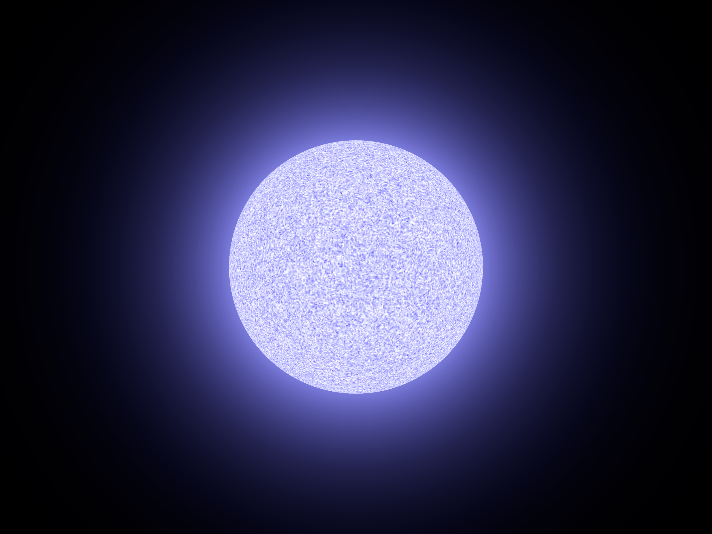
எல்லா நட்சத்திரங்களும் ஒரே நிறத்தில் தெரியாது. அவற்றின் ஒளியின் தன்மையும் மேற்பரப்பு வெப்பநிலையும் அவை எவ்வாறு தோன்றுகின்றன என்பதை பாதிக்கின்றன.
White stars பொதுவாக அதிக ஆற்றல் கொண்ட visible light-ஐ பல wavelength பகுதிகளில் வெளியிடுவதால் வெள்ளையாகத் தோன்றலாம். Blue stars இன்னும் அதிக வெப்பமான, மிக அதிக ஆற்றல் கொண்ட நட்சத்திரங்களின் ஒரு முக்கிய உதாரணமாகும்.
குறிப்பாக massive blue stars மிகுந்த luminosity-யைக் கொண்டிருக்கலாம். அவற்றின் mass காரணமாக அவற்றின் stellar evolution வேகமாக நடைபெறக்கூடும்.
நட்சத்திரத்தின் spectral energy distribution அதன் நிறத்தை தீர்மானிப்பதில் முக்கிய பங்கு வகிக்கிறது.
இரண்டு நிறங்களுக்குப் பின்னால் இருக்கும் stellar physics-ஐ ஒப்பிட்டுப் பார்ப்போம்.
பல visible wavelengths ஒன்றாகக் கலந்து நமது கண்களுக்கு வெள்ளை அல்லது வெள்ளை போன்ற நிறமாகத் தோன்றக்கூடும்.
Blue stars பொதுவாக மிக அதிக மேற்பரப்பு வெப்பநிலையுடன் தொடர்புடையவை. Massive blue stars மிகவும் பிரகாசமாக இருக்கக்கூடும்.
பொதுவாக stellar colors-ஐ temperature-ன் ஒரு ஆரம்பக் குறியீடாகப் பயன்படுத்தலாம். ஆனால் உண்மையான classification இன்னும் விரிவான spectral measurements-ஐ அடிப்படையாகக் கொண்டது.
நிறம் என்பது ஒரு useful clue. ஆனால் நட்சத்திரத்தின் முழு physical nature-ஐ அறிய spectroscopy போன்ற measurements தேவைப்படும்.
நட்சத்திரத்தின் core-ல் nuclear fusion நடைபெறும்போது energy உருவாகிறது. அந்த energy இறுதியில் electromagnetic radiation ஆக விண்வெளிக்குள் செல்கிறது.
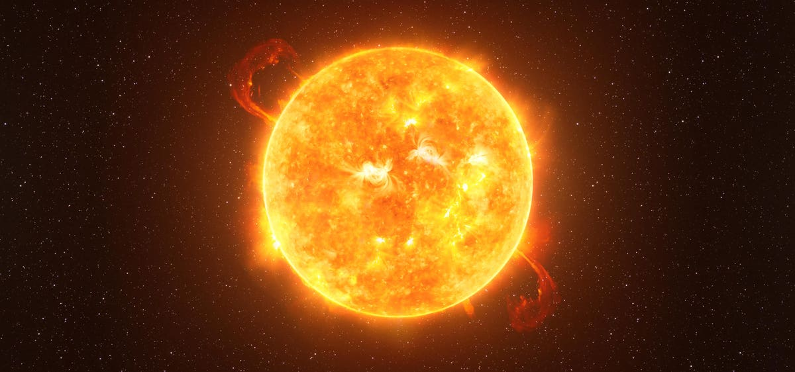
மிகப்பெரிய mass கொண்ட சில நட்சத்திரங்கள் தங்கள் வாழ்நாளின் இறுதிப் பகுதிகளில் மிகப்பெரிய அளவுக்கு விரிவடைந்து Red Supergiant நிலையை அடையலாம்.
Core-ல் hydrogen குறைந்து கொண்டிருக்கும்போது, stellar structure மாறுகிறது. பல்வேறு nuclear-burning stages வழியாக core மற்றும் அதன் சுற்றுப்பகுதிகளில் புதிய elements உருவாகலாம்.
Massive star-ன் evolution அதன் mass, composition மற்றும் mass-loss போன்ற காரணிகளால் மிகவும் சிக்கலானதாக இருக்கும். பல massive stars இறுதியில் core-collapse supernova போன்ற நிகழ்வுகளை சந்திக்கலாம்.
ஒவ்வொரு massive star-ன் இறுதி fate ஒன்றாக இருக்காது; அதன் ஆரம்ப mass மற்றும் evolution முக்கியமானவை.
Massive stars-ன் evolution ஒரு single straight line அல்ல. ஆனால் ஒரு பொதுவான high-level picture-ஆக இந்த cosmic journey-ஐ பார்க்கலாம்.
மிகப்பெரிய mass கொண்ட hot luminous star.
வெளிப்புற அடுக்குகள் மிகப்பெரிய அளவுக்கு விரிவடையலாம்.
சில massive stars-ல் core gravitational collapse ஏற்படலாம்.
சில சூழ்நிலைகளில் மிகப்பெரிய stellar explosion நிகழலாம்.
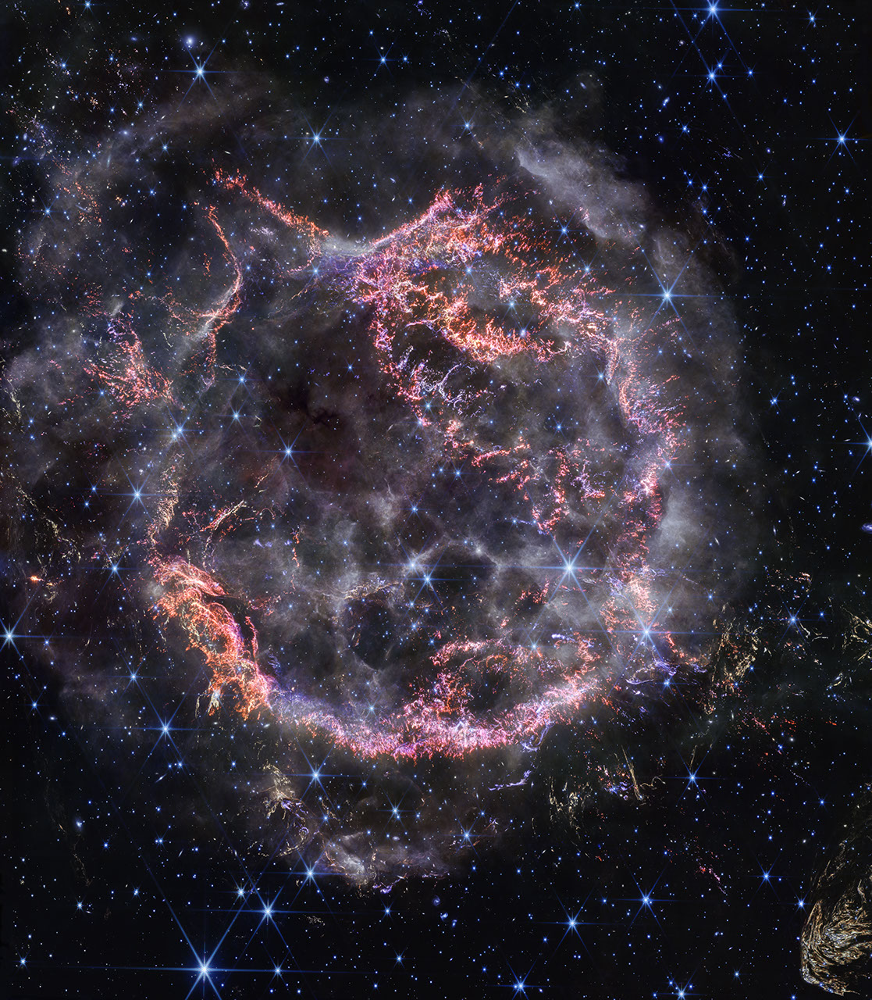
Supernova என்பது ஒரு மிகப்பெரிய stellar explosion ஆகும். Core-collapse supernova-வில் massive star-ன் core gravitational collapse அடையும்போது அதன் outer layers மிகப்பெரிய energy-யுடன் வெளியேற்றப்படலாம்.
இந்த நிகழ்வுகள் விண்வெளியில் heavy elements மற்றும் shock waves பரவுவதற்கும், அருகிலுள்ள interstellar environment-ஐ மாற்றுவதற்கும் முக்கியமானவை.
Massive star-ன் இறுதி evolution-ஐப் பொறுத்து அதன் core ஒரு compact remnant-ஆக மாறக்கூடும்.
சில core-collapse நிகழ்வுகளுக்குப் பிறகு மிகவும் அடர்த்தியான neutron-rich compact object உருவாகலாம்.
போதுமான mass கொண்ட collapsing core சில சூழ்நிலைகளில் black hole-ஆக மாறக்கூடும்.
Explosion-ல் வெளியேறிய stellar material விண்வெளியில் விரிந்து interstellar medium-ஐ enrich செய்யலாம்.
ஒரு நட்சத்திரத்தின் வாழ்க்கை முடிவடைவதுடன் அதன் கதை முடிவதில்லை. சில நட்சத்திரங்கள் neutron stars ஆகவும், சில அமைப்புகள் binary systems ஆகவும், சில ஆயிரக்கணக்கான நட்சத்திரங்கள் clusters ஆகவும், அனைத்தும் சேர்ந்து Milky Way போன்ற galaxies-ஐ உருவாக்குகின்றன.
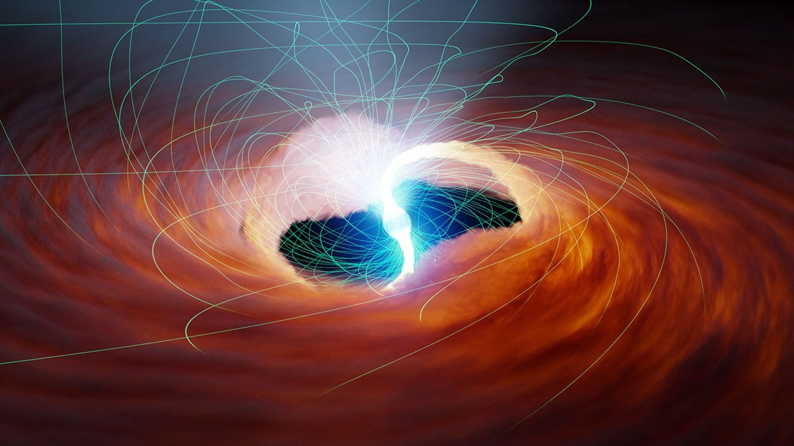
மிகப்பெரிய நட்சத்திரத்தின் core-collapse supernova-க்குப் பிறகு, பொருத்தமான சூழ்நிலைகளில் மிகவும் அடர்த்தியான neutron star உருவாகலாம்.
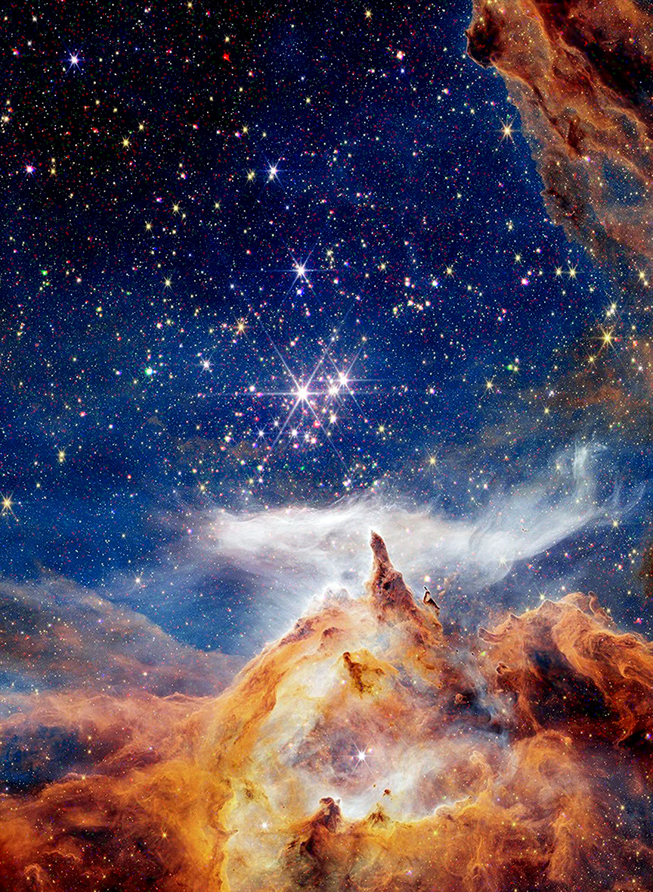
ஈர்ப்பு விசையால் ஒன்றுடன் ஒன்று தொடர்புடைய நட்சத்திரங்களின் பெரிய குழுக்களே star clusters. Open clusters மற்றும் globular clusters அவற்றில் முக்கியமான வகைகள்.
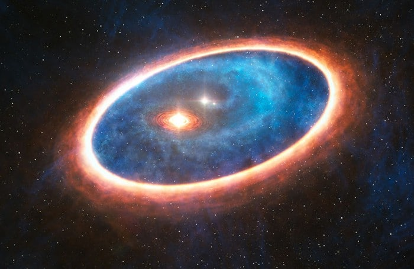
இரண்டு நட்சத்திரங்கள் ஒரே gravitational system-ல் பொதுவான mass center-ஐச் சுற்றி இயங்கினால், அவை binary star system ஆக இருக்கலாம்.
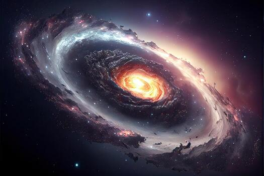
நமது Sun ஒரு தனி நட்சத்திரம். அது Milky Way galaxy-யில் உள்ள நூற்றுக்கணக்கான பில்லியன் நட்சத்திரங்களில் ஒன்றாகும் என மதிப்பிடப்படுகிறது.
பிறப்பிலிருந்து இறுதி நிலை வரை, நட்சத்திரத்தின் mass அதன் வாழ்க்கைப் பாதையை பெரிதும் தீர்மானிக்கிறது.
நட்சத்திரப் பிறப்புக்கான ஆரம்ப சூழல். குளிர்ந்த gas மற்றும் dust பகுதிகளில் gravitational collapse தொடங்கலாம்.
நாம் பார்த்த ஒவ்வொரு நட்சத்திரமும் பிரபஞ்சத்தின் மிகப்பெரிய கதையின் ஒரு சிறிய பகுதி. அவை பிறக்கின்றன, ஆற்றலை உருவாக்குகின்றன, மாறுகின்றன, சில நேரங்களில் வெடிக்கின்றன — ஆனால் அவற்றின் பொருளும் ஆற்றலும் அடுத்த cosmic generation-க்கு வழி வகுக்கின்றன.